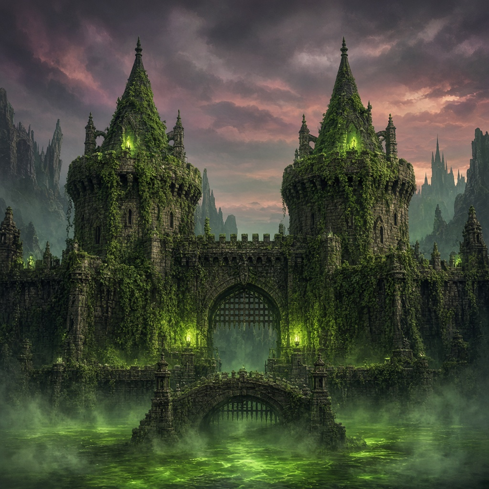
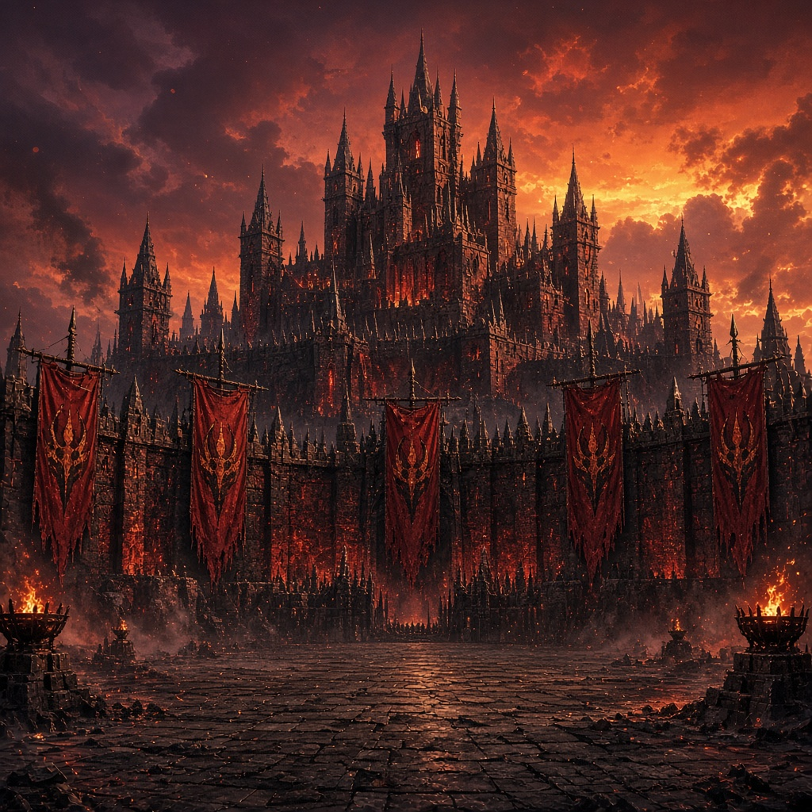
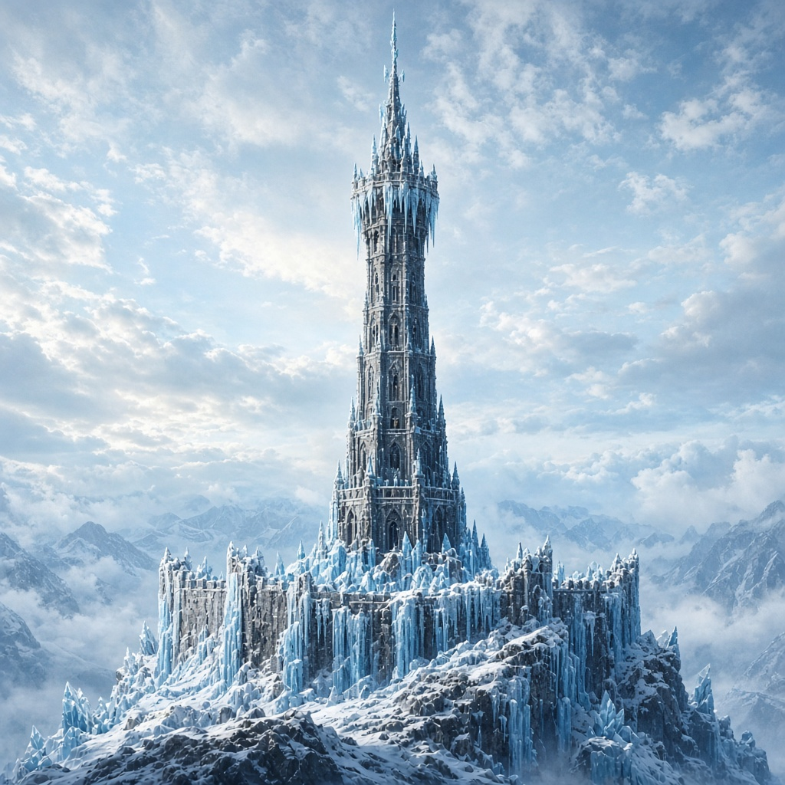
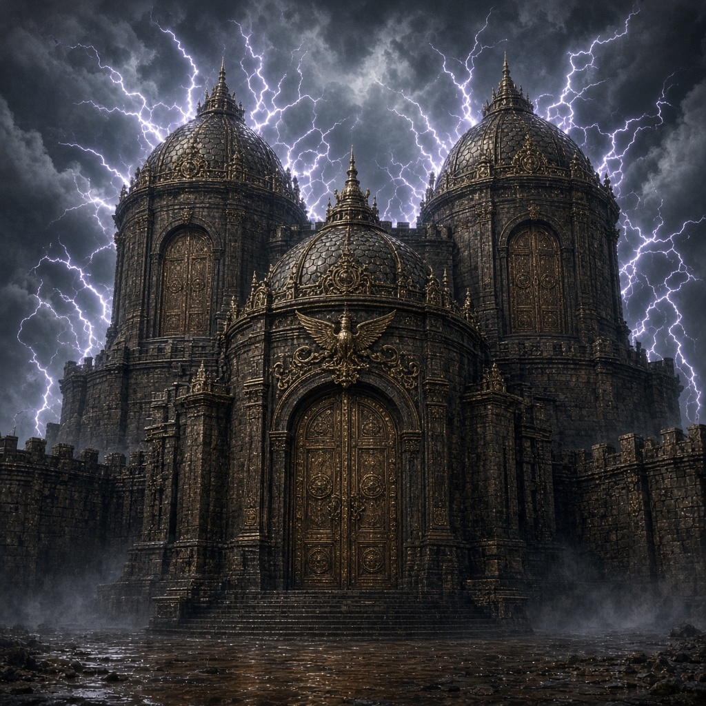
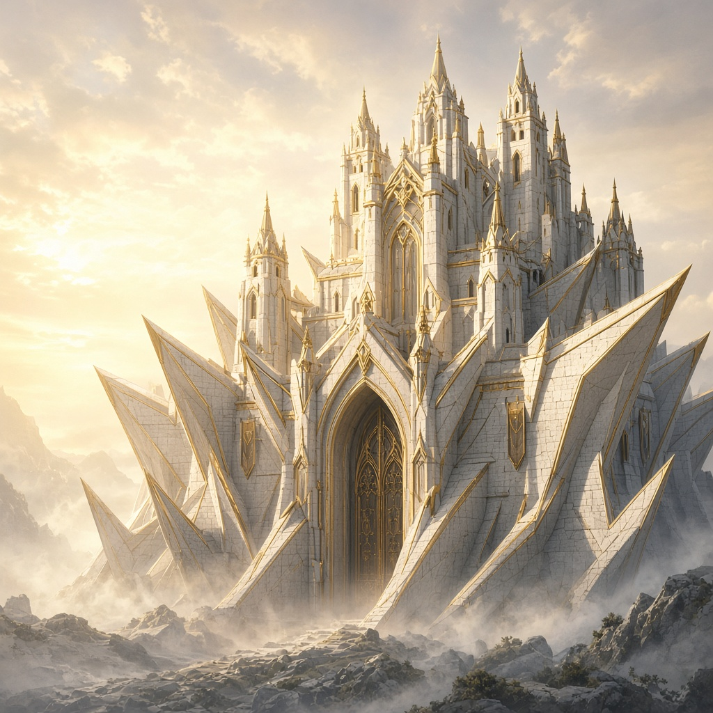
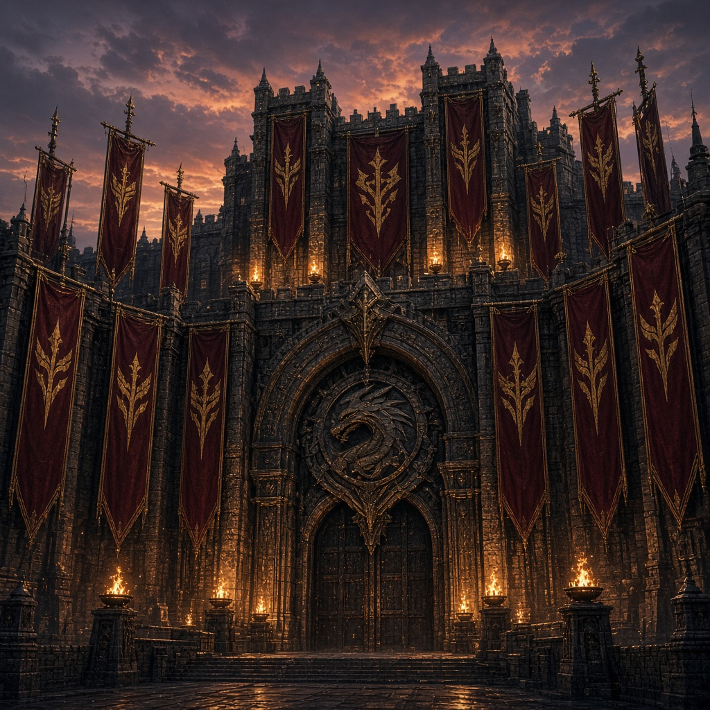

Velmora · army PvP
Castles & Army
Six castles on the map. Bind monsters from the Descent into an army, hold one keep, and siege on Wednesday and Saturday.
What it is
Castle PvP is a season of holding ground. Every Descent win (real or practice) can bind that monster into your army. From the castles channel you open the map with /castles, reinforce the walls you hold, abandon a keep, or march on someone else's. You may only hold one castle at a time — abandon before you siege another.
Before the season is marked live, every Descent win binds with no daily or size cap. Once PvP is live, binds cap at 200 per day and your total army (home + garrison + march) caps at 5,000.
Building an army
Bind from Descent
Beat a monster in any Descent channel and it joins your roster with its floor and combat stats. Practice wins bind the same way.
Check the roster
/army works in the castles channel and every Descent channel. It shows a paged full roster, mix by type, and your sacrifice bonuses.
Sacrifice 500 → ATK or DEF
Burn 500 regular monsters (lowest floors first) for a permanent army Attack or Defense bonus. Bosses can't be sacrificed. Floors 1–9 give no boost; higher floors pay more per monster.
| Floor band | Boost per sacrificed regular |
|---|---|
| 1–9 | None |
| 10–39 | +0.00002% |
| 40–69 | +0.00004% |
| 70–90 | +0.0001% |
| 91–100 | +0.00014% |
Troop stats by Descent floor
Every bound monster keeps the HP / ATK / DEF from the floor you beat it on. Castle clashes use those three stats: total ATK strikes, average DEF mitigates, HP soaks damage (weakest first). Matching the castle wall’s element boosts defender DEF.
| Floor | HP | ATK | DEF |
|---|---|---|---|
| 1 | 46 | 8 | 4 |
| 10 | 244 | 39 | 24 |
| 20 | 464 | 73 | 46 |
| 40 | 904 | 141 | 90 |
| 50 | 1,124 | 175 | 112 |
| 60 | 1,747 | 272 | 174 |
| 69 | 2,421 | 376 | 241 |
| 80 | 3,390 | 526 | 338 |
| 90 | 4,409 | 684 | 440 |
| 100 | 5,560 | 862 | 555 |
The six castles
Each keep has a wall element, a title for its owner, and a perk that lasts while you hold it. Matching wall-type troops defend harder.

Deadlock Keep
Win all duel ties while you hold it.

The Fifth Muster
Every 5 Descent beats → +1 army monster (a clone of one you just bound).

Surestroke Tower
Wild Threat /cast auto-picks the right spell for you.

The Triple Tithe
+3 house points on duel wins (still subject to the usual daily duel-point rules).

Prelude Bastion
Descent monsters start at half attack while you hold it.

Bannerhall
Once a week, your house earns +30 × how many castles that house holds.
How sieges work
Sieges open on Wednesday and Saturday (Chicago time). Pick a castle from the /castles board — reinforce, siege, or abandon from there.
Reinforce anytime
Stock your walls whenever you like — except mid-assault. Garrison caps: 350 regulars, 1 boss, and up to 5 element types among regulars. Troops move from your home army into the walls.
March on a keep
Attack force caps: 200 regulars and 2 bosses (strongest first). You can't siege a castle you already own, and you must abandon your current keep before attacking another. Empty armies can't march.
Ten-minute assault
Once the march starts you have 10 minutes on the clock. Drive clashes from the board. After each clash that doesn't capture the keep, you get 30 seconds to attack again or pull back. Time out or pull back and the castle locks for 20 minutes. Battle reports show each side's Descent floor range plus total ATK, average DEF, and total HP. Attackers take the full counter-strike; garrison losses are lighter so a winning defense is not gutted in one clash.
Capture & abandon
Clear the garrison and the keep is yours — title, perk, and all. Abandoned garrisons return to your army. You can't abandon while under assault. Captured leftover walls are wiped.
Matching the wall's element raises defender DEF (boss walls at Bannerhall higher still). Sacrifice ATK/DEF bonuses apply to your whole army's strike and armor. Higher-floor troops matter: a march more than 20 floors below the garrison's average cannot capture — floor-40 never clears floor-70 walls, even if the garrison is thin.
Sunday & weekly pay
Sunday stipend
Every Sunday (Chicago time), each held castle pays +50 house points to the owner's house.
Bannerhall weekly
If your house holds Bannerhall, once per Chicago week it also pays +30 × N, where N is how many castles that house holds on the map.
Commands
/castlesMap board in the castles channel — owners, perks, reinforce, siege, abandon./armyFull paged roster + sacrifice 500 → ATK/DEF (castles channel and every Descent channel).
Army monsters come from the Descent. Wins there fill the roster you'll march with here.